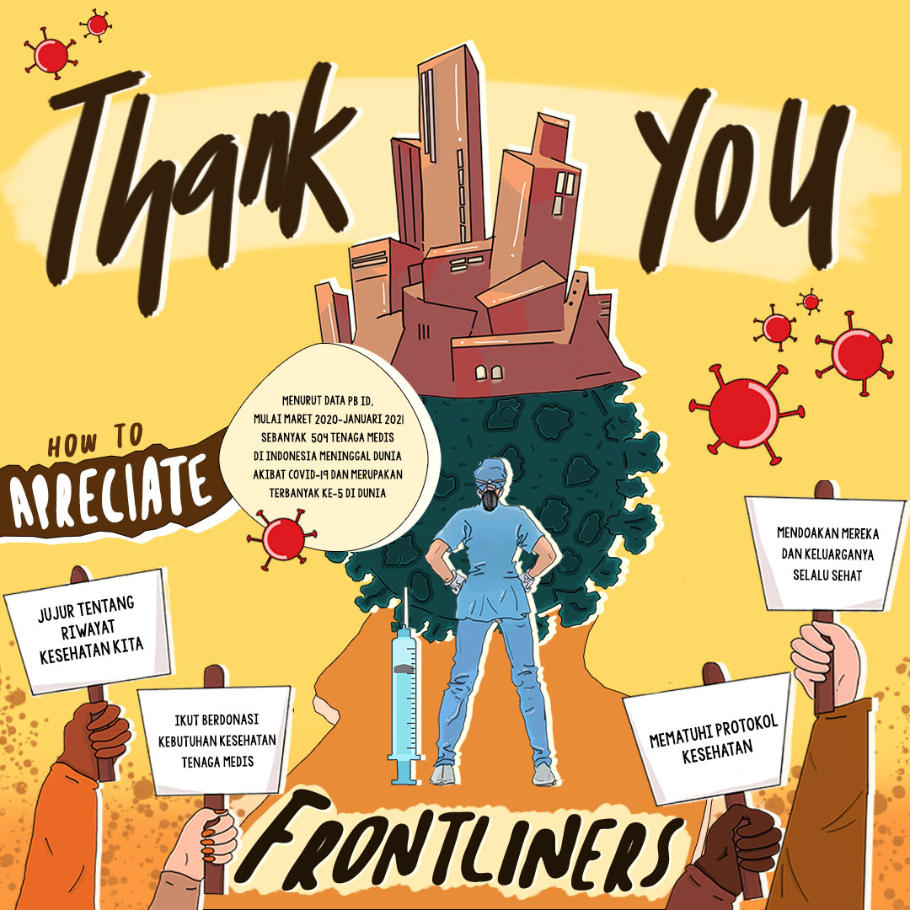

Resep Sukses Dikala Pandemi
Selama Pandemi Covid-19, tren hidup sehat menjadi salah satu kebiasaan penting yang menjadi fokus banyak orang, karena hidup sehat merupakan cara untuk menjaga dan meningkatkan imunitas yang menjadi kunci penting dalam bertahan dari Pandemi Covid-19. Nah, salah satu dari kebiasaan sehat yang perlu dibiasakan di situasi pandemi ini adalah memilih makanan yang sehat, bergizi, dan tentunya berkualitas, termasuk cemilan kamu! Tahukah kamu, bahwa sebagian besar orang Indonesia tidak bisa terlepas dari kebiasaan nyemil, dan menurut survei online "The State of Snacking" tentang kebiasaan ngemil oleh The Harris Poll, dibanding rata-rata global, orang Indonesia cenderung lebih banyak mengonsumsi camilan daripada makan berat setiap hari. Dan berdasarkan data penelitian Riset Kesehatan Dasar Kementerian Kesehatan di tahun 2013, sebanyak 53.1% penduduk Indonesia yang berusia diatas 10 tahun, mempunyai kebiasaan mengonsumsi gula berlebih, dan rata-rata didapatkan dari makanan-makanan manis, termasuk makanan pencuci mulut atau yang akrab dikenal sebagai dessert. Oleh karena itu, ide healthy dessert muncul sebagai salah satu ide usaha di tengah pandemi dengan tujuan supaya masyarakat Indonesia bisa mendapatkan camilan yang lebih bergizi dan berkualitas. Better Food for Better Life!

The Intricate Truth Of Beauty Standards
Beauty doesn't define by apperance and physical, because the true Beauty sparks truly from the deepest heart and will emitted through someone's aura. And aura never lie because we don't see it, but we feel it. Beauty doesn't have standards because everyone just beautiful who they are , with all of their uniqueness.
Keep It Clean!
Kebersihan merupakan hal terpenting dalam hidup, terutama di masa pandemi ini. Oleh karena itu, marilah kita jaga kebersihan kita dengan rajin membersihkan diri kita dan lingkungan sekitar kita, seperti menyapu, mengepel rumah, dan lainnya. Stay safe and Healthy!

How Is Beauty Define In Society?
Current beauty standards say that women are expected to wear makeup in everyday life, exercise regularly at the gym, have an ideal body (small waists, long legs, narrow hips, long shining hair, white flawless skin, slim body, curves in the right place) and look young. But i thought that, beauty doesn't define like what the society said because the beauty of someone means a lot more than that.
Detectives
Di projek desain ini, kelas kami mengambil tema "Detektif" sebagai tema untuk buku tahunan kami di kelas 8. Karena itulah, akhirnya desain ini bisa terealisasikan. Di foto ini, kami berfoto di kawasan Kota Tua, Jakarta lebih tepatnya di Batavia Cafe. Dan ini merupakan salah satu desain yang lumayan berkesan untuk saya karena ini merupakan desain pertama yang saya buat dengan serius.

What Is Beauty?
“a combination of qualities, such as shape, color, or form, that pleases the aesthetic senses, especially the sight.”
Jakarta Fashion Week 2020
Fashion merupakan salah satu bidang yang banyak orang minati, karena fashion merupakan ikon dari diri kita yang mencerminkan kepribadian kita. Oleh karena itu, dalam desain yearbook kelas kami untuk kelulusan, kami mengambil tema Fashion sebagai tema kelas kami, agar kami bisa mengabadikan kelas kami sebagai kelass yang penuh warna, yaitu berbagai macam kepribadian dan juga sifat dari masing-masing kami yang membuat kelas kami unik dari kelas lainnya.
Fashion Magz
Fashion merupakan salah satu bidang yang banyak orang minati, karena fashion merupakan ikon dari diri kita yang mencerminkan kepribadian kita. Oleh karena itu, dalam desain yearbook kelas kami untuk kelulusan, kami mengambil tema Fashion sebagai tema kelas kami, agar kami bisa mengabadikan kelas kami sebagai kelass yang penuh warna, yaitu berbagai macam kepribadian dan juga sifat dari masing-masing kami yang membuat kelas kami unik dari kelas lainnya.

Thankyou Frontliner!
To all frontliners, we just wanna say thankyou from our deepest heart because already sacrifices your all for the health and our safety. Thankyou , we wont forget you!
The Person Behind Gojek
Nadiem Makariem is the person behind gojek, one of the biggest unicorn in Indonesia. He is also the Ministry of Education from Indonesia.

What Does Beauty Standard Means?
“Standar kecantikan” adalah suatu gagasan yang dibentuk dalam masyarakat, di mana daya tarik fisik menjadi salah satu aset terpenting yang seharusnya dimiliki dan diperjuangkan oleh wanita.